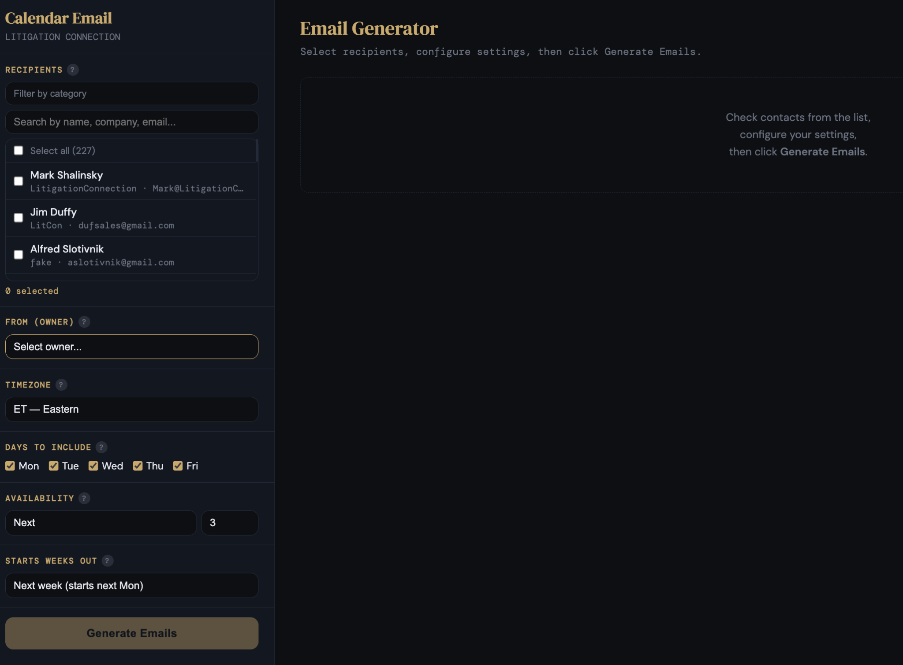

InvoiceAndCollect
A beta suite of cost-effective Google Sheets add-ons that helps vertical-specific businesses invoice, collect, and reconcile bills — and make accounting cleaner.
Built from real startup operating experience across SaaS, cybersecurity, workflow tooling, revenue operations, and AI-enabled operational systems.
Data Sales Science combines operating experience, product-building discipline, and practical AI-driven tools where they actually create leverage.
A beta suite of cost-effective Google Sheets add-ons that helps vertical-specific businesses invoice, collect, and reconcile bills — and make accounting cleaner.
A done-for-you appointment-setting service and AI-enabled attorney intelligence platform with 200k+ attorneys segmented by geography, practice, and seniority.
All-in-one gym management platform for CrossFit affiliates — scheduling, WOD programming, live leaderboards, personal training, and memberships. $100/month flat.
Generate personalized availability emails from your real calendar in seconds. Paste your ICS URL, pick your days, and send — no Calendly links needed.
Helping startups and PE-backed companies build revenue with experience, operating discipline, and AI-driven tools.
Hands-on operating experience across startup sales, sales operations, revenue operations, workflow automation, and scalable operational systems.
Not the founder with the original idea. The operator who helps great ideas scale.
Mark has built sales, sales operations, revenue systems, and workflow infrastructure inside companies that needed to grow. That experience now powers Data Sales Science products, labs, and advisory work.
Read founder storyAI systems that solve operational bottlenecks, not demos that look good in a meeting.
Recent systems include AI-generated email follow-up workflows, attorney matching criteria, cold-call and email scripts, and PACER / CourtListener parsing to identify plaintiff and defense attorneys.
Explore Workflow Labs
External appearances and writing help make the operator story visible: data-driven cold calling, sales process, cybersecurity lead generation, and revenue systems.
MonsterConnect interview on data-driven cold calling with Mark Shalinsky, PhD.
Open →Spotify appearance: Mark Shalinsky / Data Sales Science.
Open →Salesborgs podcast archive and related sales / AI conversations.
Open →Featured among sales experts to follow.
Open →Writing, media, and field notes connect the operating philosophy to practical sales and workflow systems.
Being able to properly handle objections can make or break a sale. Depending on where in the sales cycle the objection is brought up will determine the method of handling. Typically objections are...
Read post →It’s a time honored mantra of sales leaders, “time kills deals”. From this, funnel velocity is arguably one of the most important metrics you can measure your sales staff on. The question remains,...
Read post →We collect business cards. We keep the business titles in our CRMs. We know the business titles can derive value. The question persists, how do we monetize business titles? To me, there are 3 key...
Read post →Opportunities beget deals. Deals beget revenue. No leads, no deals, no revenue, no company. So guess what, lead generation is key. At Message Blocks we have a great event planning, management, and...
Read post →